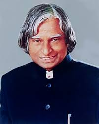

A. P. J. Abdul Kalam was a great scientist and the 11th President of India. He was born on October 15, 1931, in Rameswaram, Tamil Nadu. He is known as the “Missile Man of India” because of his important work in missile and space technology. He worked with organizations like ISRO and DRDO and helped India become a strong nation in science and defense. He also played a key role in India’s nuclear tests in 1998. Kalam was a very simple and humble person who loved students and always inspired young people to dream big. He passed away on July 27, 2015, but his thoughts and ideas still motivate millions of people.